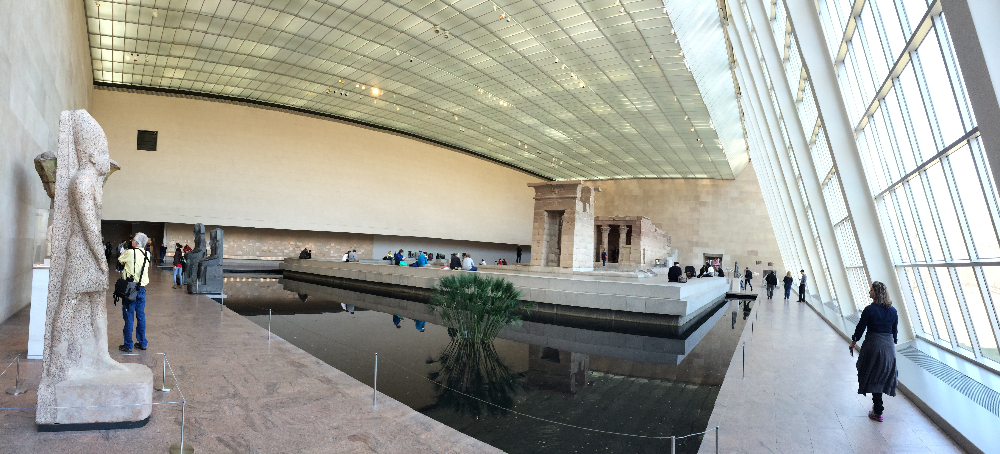

Take your time to explore the Egyptian exhibit, staying on this first floor. There is no wrong way to go, the museum will guide us where it wants. You will eventually proceed through a doorway into a wide open, greenhouse-like room with a reflection pool.

The Temple of Dendur — Sackler Wing